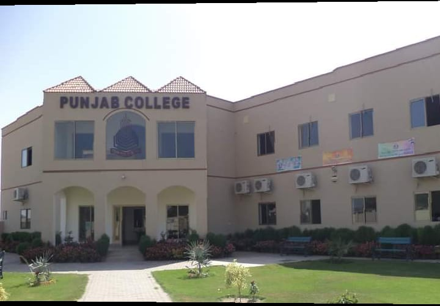
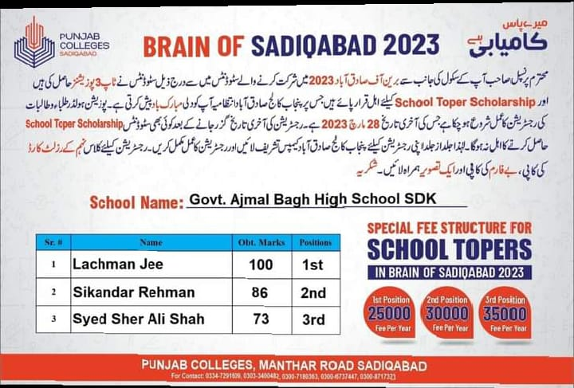
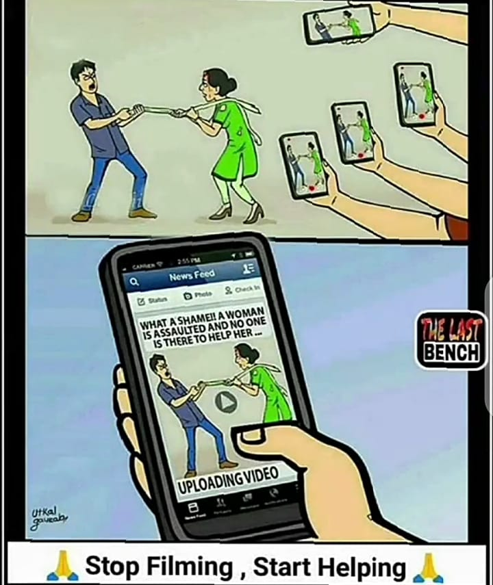
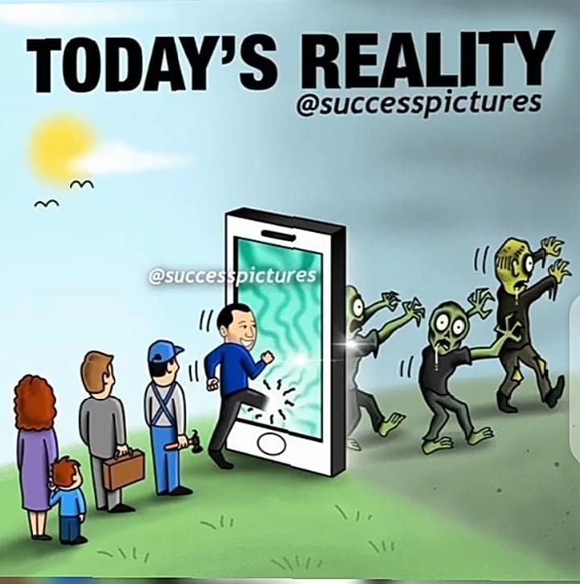
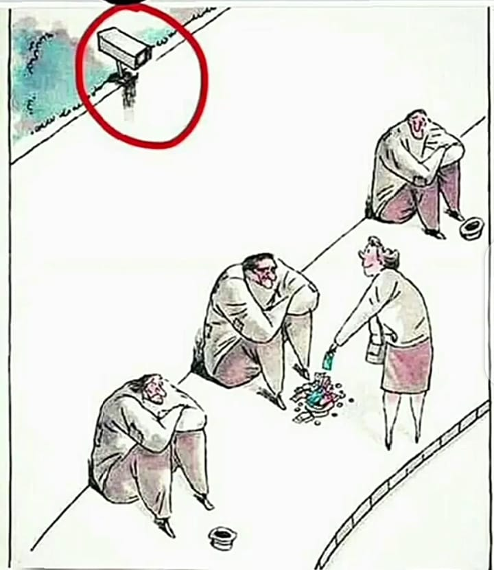
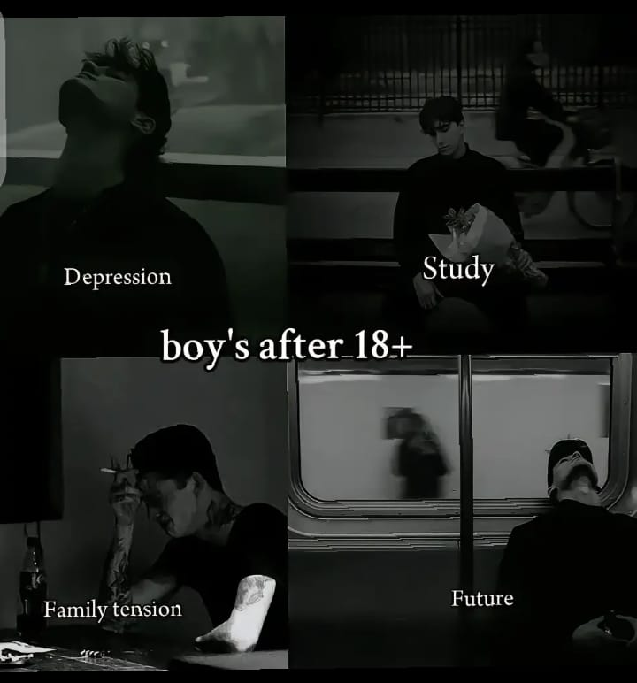

My Resume
This website is about My personal experiences:
First o`f all I will want to tell you about me!
Basic Information
- Name :Sikandar
- Father's Name :Rehman
- Education:Continuaing
- Address:.......
- Age:17 years
About My Collage..
I am studying now in PGC it satnds for punjab group of collages.This is the most famouse collage in our city and also beautiful.

Charecterstices of our collage
- They take less fee
- They also give their students kits for sport
- They also invent a bonfire party at the end of year
- They also take series test for better preparation
You can click here to know about more
Punjab collage SDK
My Scohlership..
I also want to tell you about my scohlership that I had take

- They also conduct a test at every year in which many students took part
- This test cosist of three positions
- In whuch in the school competition i have got the second position as you can see in above image .If you are interested about brain of SDK then you have to click on link that is given below
Brain of SDK
Effect of social Media...
- Studies have shown that social media use can lead to feelings of anxiety, depression, and loneliness.
- This is because social media often presents a distorted view of reality, with people presenting only their best selves and creating unrealistic expectations for others.
Effect of Social Media on Today's Generation...
- it has positive as well as negative impact on Youth. On one side, people use it for learning and finding job opportunities but on the other hand it also has disadvantages like Cyber bullying, headache, less social interaction, time consuming and negative feelings or emotions.
- People also use it for their benifits.The role of social media in shaping body image concerns and influencing consumer behavior among youth is addressed. By examining the role of parents, educational institutions, and society in guiding and managing the use of social media among youth, this abstract emphasizes the importance of promoting responsible digital citizenship.

- None of us has an absolute right to privacy in public, but whatever happened to respecting people’s basic dignity?
- Researchers concluded that resisting the urge to use apps like Twitter, Facebook and other social media was harder to resist than smoking, drinking alcohol and even sleeping. So, internet addiction must be viewed with the gravitas of any other addiction, with appropriate therapies and systems in place.
Morever Effects...
Social Media Usage Statistics (Top Picks)

- 4.95 billion people currently use social media worldwide, up more than double from 2.07 billion in 2015
- The average social media user engages with an average of 6.7 various social media platforms
- 61.4% of global population in the world use social media, among audiences aged 18+ that’s as high as 80.8%
- Globally, the average time a person spends on social media a day is 2 hours 24 minutes
- Facebook is the leading social network at 3.03 billion monthly active users, followed by YouTube (2.49 billion), WhatsApp (2 billion), Instagram (2 billion), and WeChat (1.33 billion)
- 72.5% of the total US population actively use social media, totaling a number of 246 million people
- In the US, 54% of social media users are female, while the remaining 46% are male, compared with a global average of 46.4% for female, and 53.6%
Bad effects
You can click here to check more about it...
Time wasting Effects
What people are doing Nowadays..
If you're truly willing to help other people you don't need to get attention to anyone to do good things...
- Keep an open heart ❤
- an open mind 🧠
- an open hand ✋
- Reach out and help others.

Remember…
- People will judge you by your actions, not your intentions.
"
- "PAY ATTENTION TO INTENTION"
- People with good intentions make promises but people with good character keep them.
I have a question???
Why students get worried after 18 years?
- First thing is stress(Stress can be defined as a state of worry or mental tension caused by a difficult situation. Stress is a natural human response that prompts us to address challenges and threats in our lives. Everyone experiences stress to some degree. The way we respond to stress, however, makes a big difference to our overall well-being.
)
- Second thing is depression()
- Depression is a common mental disorder.
- Globally, an estimated 5% of adults suffer from depression.
- More women are affected by depression than men.
- Depression can lead to suicide.
- There is effective treatment for mild, moderate and severe depression.
- Third thing is family tension
- Common examples of family stress include:...
- Financial issues
- Work stress
- Disagreements about discipline
- Maintaining a work-life balance
- Visiting relatives
- Stepparents
- Overscheduled children and parents
- Serious illness of parent or child

About Study...
Why students get worried about study?
- Feeling nervous about studying is a common experience for many students, and there are several causes behind the studying anxiety phenomenon.
- For some students, it may be the difficulty of the subject matter
- How important the assignment or exam is, or overall emotional and mental well-being.
About future...
Why students get worried about future?
- Fear, anxiety, and concern are all normal reactions to the human condition of knowing about your own mortality in the face of an unknowable future.
- This is going to be true in college, after college, and throughout life.